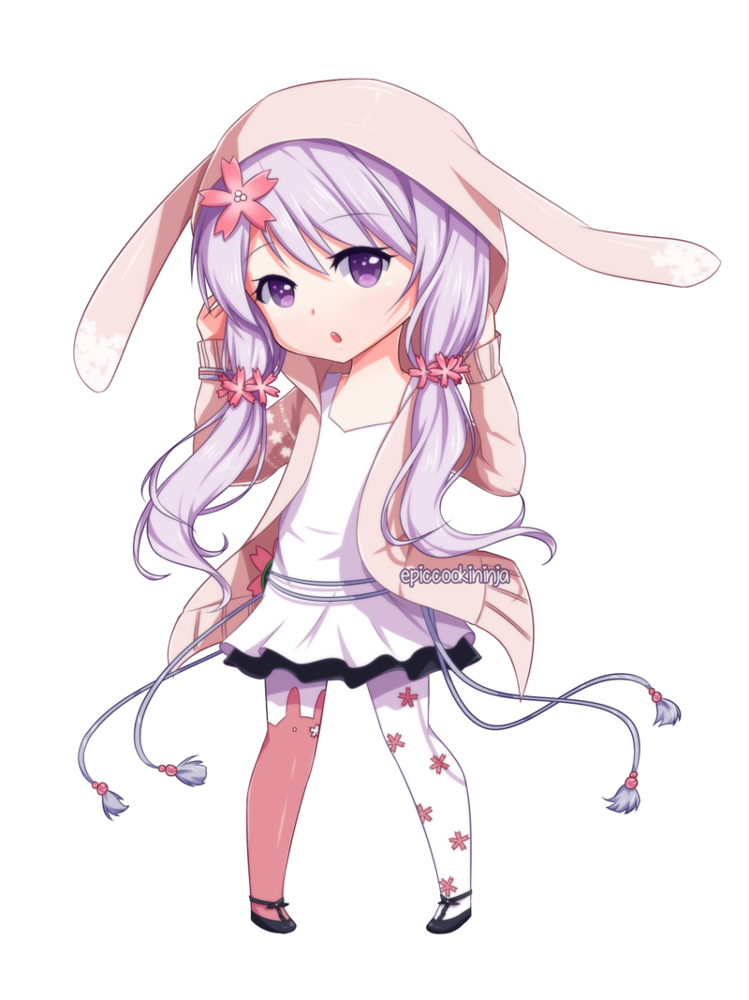

ABOUT ME
Video games, Gameplay design, Art, Music, Sport, Film
Hi, I am a third year student at the University of Southampton studying Computer science. I love games. I like all types of games but my most favourite are competitive games involving lots of strategy, otherwise I also enjoy puzzle games, logic games, rpgs and bullet hells. Outside of video games, I aspire to be a game designer and developer. I wish to be a flexible developer that can work on small or large games to my freedom. I particularly enjoy studying gameplay and game design choices and intend on critiquing various aspects of game design choices in this blog, hopefully leading to some discussion about the insights to these choices.
I thoroughly enjoy looking at art of all kinds, I think part of making art is to be appreciated so I aspire to always appreciate the art that someone else produces great or small. I do not often watch films as I would like to because I feel the modern era of films has left a lot to be desired and that they have regressed slowly away from an artform. That being said there are always gems that I hope to catch, I will be discussing my thoughts, ramblings and informal reviews on here too.
On a more personal scale, I grew up fairly sheltered and was scared to meet new people but I eventually grew out of my shell when I entered my adolescence, I'm still a bit of a scaredy cat, that hasn't changed ^^. I think of myself as a bit of a tradionalist, I am very grounded in each person respecting their heritage and taking pride no matter where they come from. I also think with an egoistic and individualisc mindset because I think the direction of our lives is steered by our choices, and no matter what influences your choices we are still the ones who ultimately make the final call to our destiny. My hobby is studying philosophy with my favourite areas being existentialism, eastern philosophies, and analytical philosophy. Many know my favoute animal are Rabbits but I also really like Dogs and even horses. I was born with rabbit as my zodiac therefore I feel a deep connection to it so much so that I would even call it destiny that I was born with this sign. I even like gazing at the moon!
I am intending to use this for my game ideas mostly but also for lots of other interesting things I want to talk about. For example, I actually quite like romance novels, but the majority of novels I have currently read are classical novels from before the 20th century. Classical novels feel like they are much better written than modern ones, but maybe it's because of the intended audiences, modern writers must write in colloquial ways and attempt to immediately catch the reader on a hook which disappoints me. I really like the silver tongue text that classical novels have, there is a bit of elegance in the way they were written which I adore. In regards to my game ideas, I have a whole universe I dream to bring to life, to create and share with everyone. The name of this world is 'Crowlion', and I wish for it to grow into the gem that the kid all those years ago dream't it would grow to be. It's funny how the aspirations and desires of adults usually ends up being little dreams of a growing child. That's all I am going to disclose for now about Crowlion. I plan on unveiling the machinations of the world through novels and games that I am working hard to come to life. I guess finally, the last thing I would like to say is, for those that are reading this, I am grateful that you were able to see a side of me I do not show to other's, because if you are reading this out of the curiousity of your heart and not by the frivolent pleads of a lost boy lost in his world, it means I made my dream come true, a dream not of my older self, but a dream that was anchored into my heart from my younger self, for that is the only dream that my older self has, the happiness for that child all those years ago.
Peter Deng/Rivehn

My details, contact me by email and I will do my best to reply
I'm happy to hear your feedback!

Phone: no
Personal Email: pjdeng1999@gmail.com
University Email: pd2g17@soton.ac.uk
Say hi to me, or leave me a note through this: